| Basic GO views
|
| 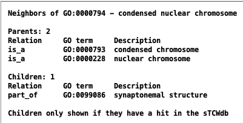
| Fig 1. Neighborhood
GO:0000794 has an edge (direct link) to two parents and one child.
|
| 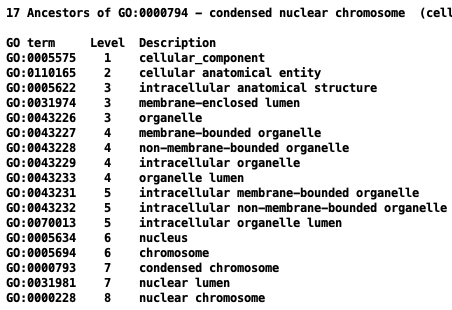
| Fig 2. Ancestors
The ancestor condensed chromosome and nuclear chromosome are the parents of GO:0000794;
however, that is not obvious from this view.
This is why levels can only be used as an approximate location of a GO in the
DAG (directed acyclic graph). See Fig 9 below for further explanation.
|
| 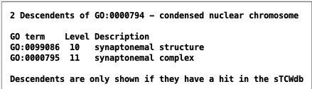
| Fig 3. Descendants
GO:0099086 is a child of GO:0000794.
GO:0000795 is a child of GO:0099096, hence, a descendant of GO:0000794.
|
| 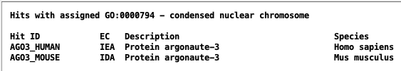
| Fig 4. Hits with assigned GO
The UniProt .dat file provides these assignments and can be found
at Amigo in gene products:
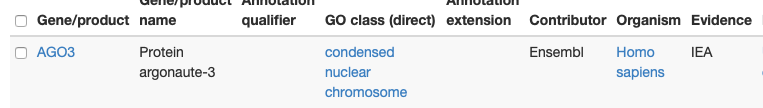
|
| 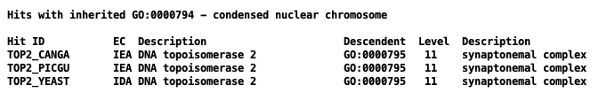
| Fig 5. Hits with inherited GO
Fig 3 and Fig 10b show why these hits inherit the GO, i.e.
GO:0000795 is a descendant of GO:0000794.
|
| 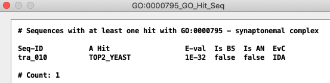
| Fig 6. Sequences with hit with GO
Each sequence may have many hits with this GO; only the one with the best e-value is shown.
|
| Sequence Detail GO views
|
| 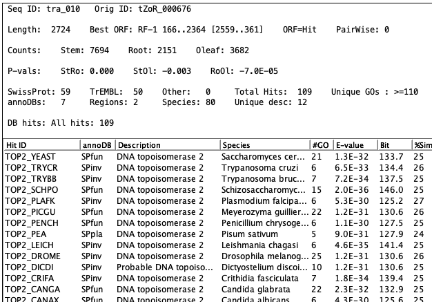
| Fig 7. Sequence detail of tra_010
Part of the list of hits for sequence tra_010, where the image
on the left shows all three hits listed in Fig 5.
Fig 6 lists tra_010 as a sequence of GO:0000794.
|
| 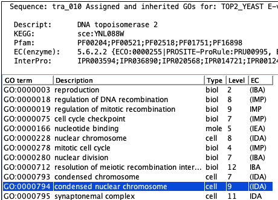
| Fig 8. GOs for tra_001
TOP_YEAST has 21 GOs assigned
to it so the list is way too long to show here.
All hits shown in Fig 3 are in the full list (scrollable in TCW).
|
| Path views
|
| 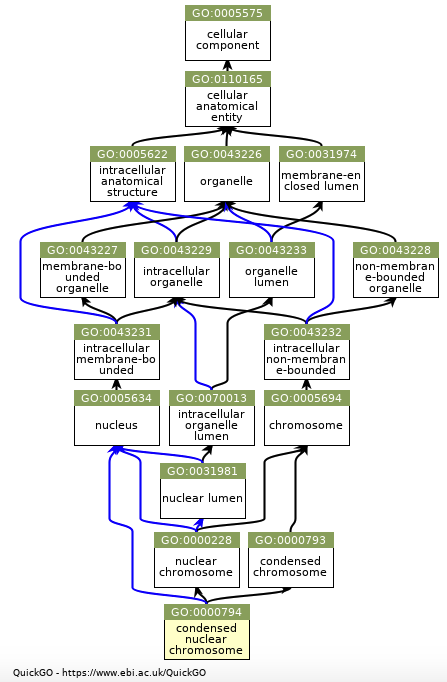
| Fig 9. Quick GO
Black edge: is_a; Blue edge: part_of
The graph on the left shows why both nuclear lumen and condensed chromosome are assigned
level 7; that is, they can be traced from the top node down 6 edges for the longest path.
Fig 11 makes the connection between levels and the graph easier to understand (but is not as
concise as the QuickGO graph).
Fig 10a. Child of GO:000794
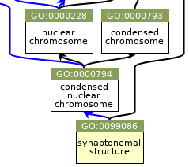
Fig 10b. Child of GO:0099086
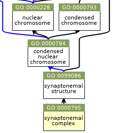
|
| Fig 11. TCW paths - click to enlarge image
|
| 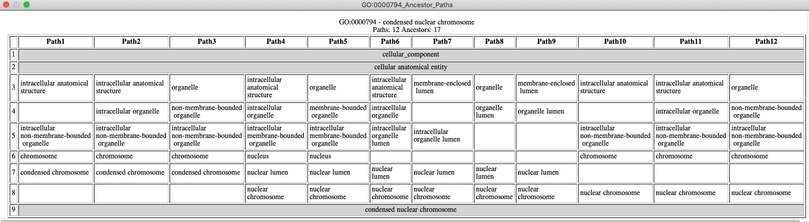
|
{kind=link}